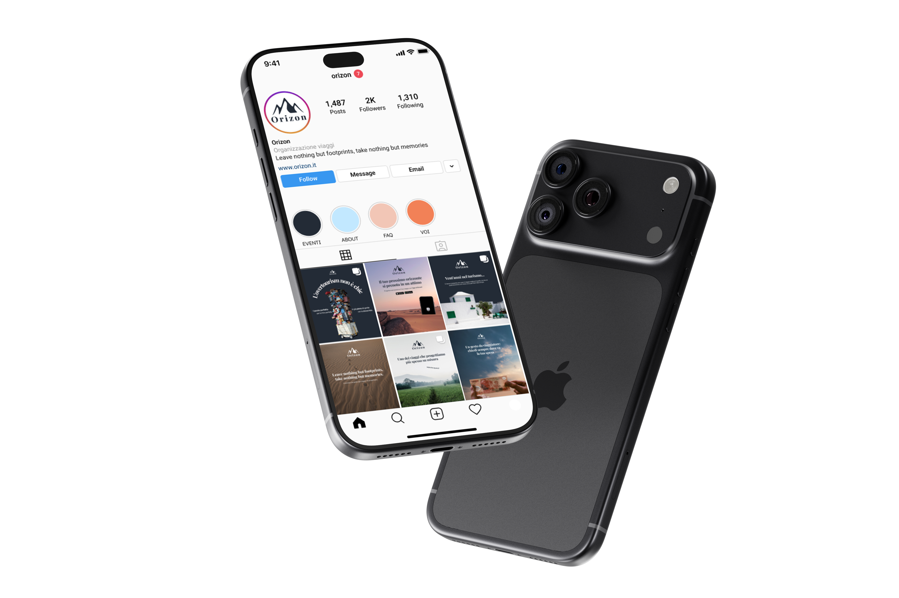
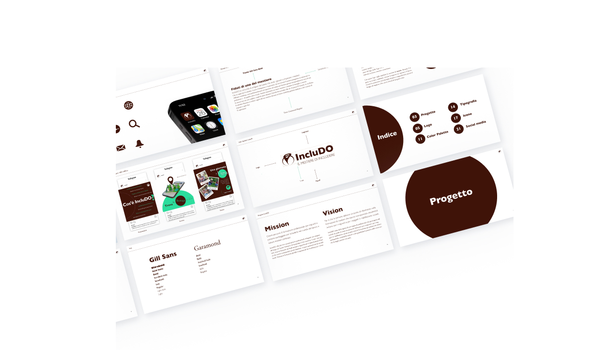
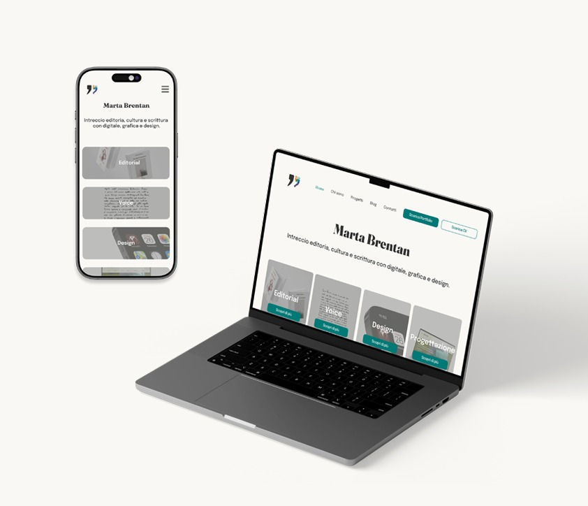

Limes Brand Guidelines
Ho sviluppato un sistema visivo per Limes, rivista italiana di geopolitica: logo, palette cromatica, tipografia, icone e grafiche social. Per il simbolo ho cercato un elemento già presente nell’identità della rivista, trovando ispirazione nelle mappe parlanti di Laura Canali.
Strumenti: Figma, Canva, Adobe Creative Suite
Progetto: start2impact

Orizon — Grafica social
Un progetto concept per un’agenzia di viaggi immaginaria. Dopo aver analizzato quattro tour operator italiani, ho definito palette, tipografia e linguaggio visivo, progettando contenuti per Instagram, LinkedIn e YouTube, tra caroselli, post, stories e copertine.
Strumenti: Figma, Canva, Adobe Creative Suite
Progetto: personale

IncluDO Brand Guidelines
Ho progettato logo, palette, tipografia, icone e grafiche social per un ente di formazione orientato all’inclusione e alla valorizzazione dei mestieri tradizionali. Il logo nasce dall’incontro tra l’idea di unione e quella di manualità, due concetti centrali nella missione e nella vision del progetto.
Strumenti: Figma, Canva, Adobe Creative Suite
Progetto: start2impact
Legale Scuola Brand Guidelines
Ho sviluppato l’identità visiva di uno studio legale, definendo logo, palette cromatica, tipografia e grafiche social. Il lavoro ha richiesto di mantenere un aspetto professionale e istituzionale, con un logo orizzontale. La soluzione finale valorizza le iniziali, in una direzione pulita e riconoscibile.
Strumenti: Canva, Adobe Creative Suite
Progetto: studio

Ammartaggio Brand Guidelines
Ho ideato il logo, scelto palette e tipografia e creato un UI Kit in Figma per progettare wireframe e prototipi. Il sito unisce editoria e design digitale: la virgoletta richiama il lavoro sui testi, mentre i pixel colorati rappresentano il passaggio dalla parola all’interfaccia.
Strumenti: Figma, Canva, Adobe Creative Suite,
Visual Studio Code, GitHub
Progetto: personale

Aesthetics & Estetica 4.0
Ho progettato e sviluppato due siti web con obiettivi, contenuti e pubblici differenti, costruendo un ecosistema digitale coerente per clienti finali e professionisti del settore. Mi sono occupata della struttura informativa, dell’esperienza di navigazione e dell’implementazione in WordPress.
Strumenti: Adobe Creative Suite, WordPress,
Elementor Pro
Progetto: professionale